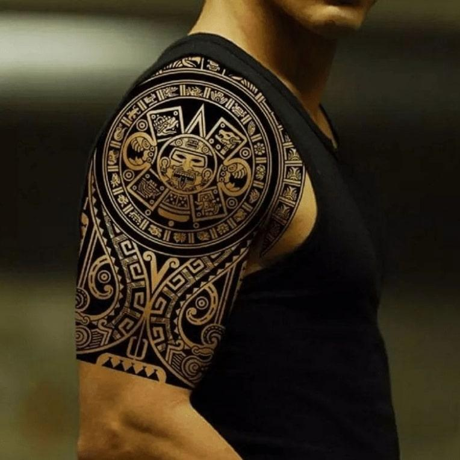
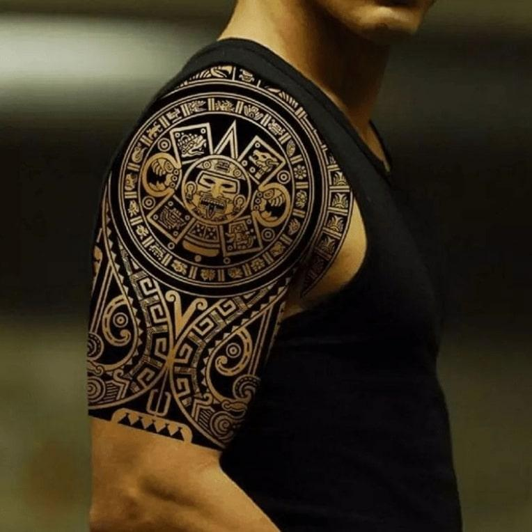

РЕКОМЕНДАЦИИ ДЛЯ ТЕХ, КТО СОБРАЛСЯ НАБИТЬ ТАТУИРОВКУ
Отправляться в тату-салон лучше всего в спокойном, расслабленном состоянии и хорошем настроении.
Нельзя
набивать тату в нетрезвом состоянии или с похмелья, поскольку алкоголь расширяет сосуды, что может
спровоцировать кровотечение.
Девушкам следует воздержаться от этой процедуры во время менструации и
беременности.
Если есть аллергические реакции на какие-либо препараты, следует известить об
этом
мастера.
В тату-салоне вам обязательно покажут фотографии с примерами работ.
Если вы не сможете
самостоятельно
определиться с сюжетом татуировки, опытный мастер вам поможет решить эту проблему.
Место для
набивки
рисунка выбирают в соответствии с размерами, символизмом и личными пожеланиями.
КАК НАБИВАЮТ ЖЕНСКИЕ И МУЖСКИЕ ТАТУИРОВКИ: ПОДГОТОВИТЕЛЬНЫЕ ЭТАПЫ
Выбранный участок тела освобождают от волосков, кожу обезжиривают спиртовым раствором,
дезинфицируют.
Место тату обрабатывают гелем или гелевым дезодорантом.
Далее на тело переносят контуры
рисунка, что
можно сделать несколькими способами.
Чаще всего используют трансферную бумагу. Рисунок, распечатанный на принтере, переносят на
трансферную бумагу. Сюжет обрезают по контуру.
Если рисунок большой, то делают небольшие
разрезы по
краям, чтобы бумага хорошо легла на подготовленный участок тела.
Эскиз прижимают к коже и через
несколько секунд снимают. На теле остаются контуры, которые мастер усиливает с помощью маркера по
телу. Опытные художники пользуются только маркерами, без трансферной бумаги.
 

Нанесение тату подразумевает введение красящего пигмента под кожу. Немного поговорим о строении кожи. Эпидермис. Это верхний, самый тонкий слой. Его верхняя часть состоит из периодически обновляющихся клеток, в которых не происходит обмена веществ. Дерма. Включает сосочковый и сетчатый слои. В дерме располагаются волокна коллагена и эластина, гладкие мышечные волокна, сальные и потовые железы, корни волос, сосуды, свободные нервные окончания. Гиподерма – подкожно-жировая клетчатка. Здесь находят продолжение волокна, расположенные в сетчатом слое дермы. Между волокнами располагаются жировые клетки. Опытные мастера точно заносят иглой, смоченной пигментом, краску в дермальный слой, оптимально между эпидермальным и сосочковым слоями. Если пигмент достиг только эпидермиса, такая татуировка сойдет очень быстро. В период заживления вокруг частиц пигмента образуются капсулы из клеток соединительной ткани, которая изолирует их от постоянно обновляющегося эпидермального слоя.
После подготовительных этапов мастер приступает к основному процессу. Как правильно набивать тату: Игла машинки погружается в краску, первым делом создаются контуры. Это самая болезненная часть процедуры. Игла вводится в кожу достаточно глубоко и очень быстро. Если мастер делает цветную тату, то окрашивающей машинкой он сначала прорисовывает темные участки, а затем светлые. Стойкими красками считаются: черная, коричневая, красная, синяя. В зависимости от задачи, применяют краски более или менее насыщенные по цвету, густые и более жидкие. Затушевку осуществляют штрихами или круговыми движениями. Если на месте есть родинка, то ее обходят стороной или прячут в рисунке. Во время нанесения пигмента кровь периодически промакивают. У девушек часто возникает вопрос о том, как делают татуировки на женском теле. Есть ли отличия в процессе нанесения рисунка мужчинам и женщинам? Этапы процесса одинаковы, но болевые ощущения могут быть разными. Например, девушкам бить тату на груди больнее, чем мужчинам. А вот в области крестца, наоборот, болевые ощущения более сильные у мужчин.
СКОЛЬКО СЕАНСОВ ПОНАДОБИТСЯ, ЧТОБЫ НАБИТЬ ТАТУИРОВКУ?
Мастер не сможет точно ответить на этот вопрос, поскольку длительность набивки тату
зависит не
только от размеров, сложности, детализации рисунка, но и от типа кожи клиента, а также его
способности длительно переносить болевые или просто неприятные ощущения.
Обычно сложные крупногабаритные татуировки делают за несколько сеансов. На первой
процедуре
наносят контуры эскиза, на второй – заливают рисунок основным цветом, на третьей – наложение
теней, финишная доводка.
Красивая, качественно сделанная татуировка имеет равномерный тон, четкие границы,
долго сохраняет первоначальный вид. Но положительные характеристики нательного рисунка зависят
не только от мастерства татуировщика, но и от ответственного отношения владельца татуировки к
правилам ухода за ней в течение всего реабилитационного периода.